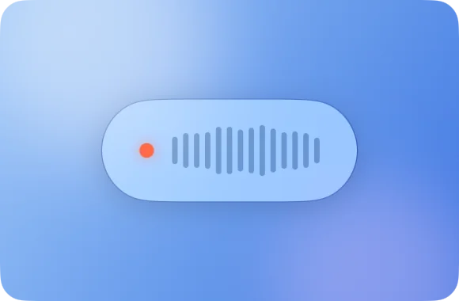
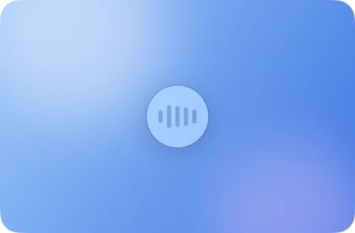
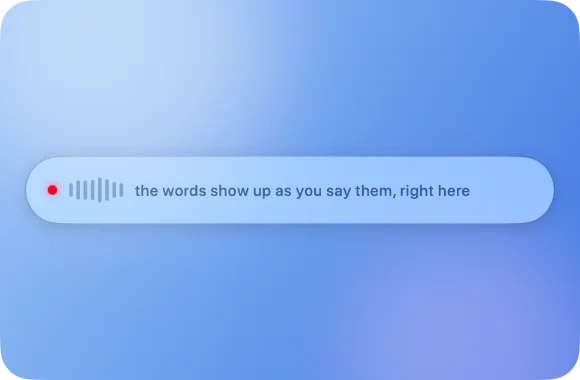

Talk to
your agents.
Pladder is push-to-talk dictation for Mac. Say the prompt, let go, and it's in T3 Code, Claude or Codex in 0.2 seconds. Free, and nothing you say leaves your Mac.
It's only kept in memory. Save it to UserDefaults?
Yes, and add a test for it.
Option space to talk, tap V to send
from letting go to your words on screen
Blink and it's there.
No spinning wheel, no “processing”, no upload. Your prompt is in the box the moment you let go, and your agent is working before you've looked up.
Measured on an M1, the oldest Mac it runs on: a median of 0.195 s over real dictations, and still 0.261 s after five minutes of talking. See the benchmark
Say the detailed prompt, not the lazy one.
Typing makes you cut corners. Talking is three to four times faster, so you give your agent the context it actually needs.
Typed
> fix dark mode bug
And then three rounds of “no, I meant…”.
Said
> The dark mode toggle in settings forgets its state after a restart. Save it, load it on launch, and add a test that flips it and relaunches.
Right the first time.
A dictionary fixes the names speech models trip over: tools, libraries, your project's jargon.
Pladder pastes the prompt and presses Enter for you. Same hand, no reaching.
Stop typing. Start talking.
Not just for agents. If there's a blinking cursor anywhere on your Mac, Pladder can fill it.
Emails
Clear your inbox at the speed you talk.
Messages
Reply to friends without breaking stride.
Notes & docs
Get the first draft out of your head in minutes.
Search boxes
Ask the long question, not the three-word one.
Talk freely. Nobody's listening.
Your voice becomes text on your Mac, not on someone else's server. What you say about your code, your clients or your weekend stays with you.
Cloud dictation apps
Their privacy policy is pages long.
Because your voice goes to their servers.
Pladder
Ours is one line:
Nothing you say leaves your Mac.
Offline · No account · Mic on only while you hold the key · Privacy details
Others rent you dictation. Pladder gives it to you.
The popular dictation apps are subscriptions. Pladder is free, and it never sends your voice anywhere.
| Pladder | Wispr Flow | Superwhisper | |
|---|---|---|---|
| Price | Free. No subscription. | $15 a month for Pro | $8.49 a month for Pro |
| Free plan limits | None. The best model is included. | Weekly word cap | Whisper models only. Parakeet needs Pro. |
| Speed | 0.2 s, measured in public | No public benchmark to rerun | No public benchmark to rerun |
| Where your voice goes | Nowhere. It stays on your Mac. | To their cloud servers | Your Mac, or the cloud with Pro cloud models |
| Works offline | Always | No | Only with local models |
Pro prices as listed on Wispr Flow's pricing page and Superwhisper's plans page in November 2026, billed monthly. Yearly plans cost less per month, and Superwhisper also sells a lifetime license. Check their sites for current terms.
Learn it in five seconds
Simple as a walkie-talkie.
Hold Option Space
Click into the prompt box, then hold. The mic turns on. Only now.
Talk
Like you'd explain it to a colleague. Say “comma” or “new paragraph” when you want one.
Let go
The text lands at the cursor. Tap V first to send it. Changed your mind? Press Escape.
Four styles. Pick your pill.
A small Liquid Glass pill shows you're recording. Keep it compact, shrink it to a dot, watch your words appear live, or tuck it into the menu bar.

Compact 
Minimal 
Live Menu Bar
Little things you'll love.
No more “um”
“So, um, I think we should, uh, meet at noon”
“So, I think we should meet at noon”
Changed your mind?
“See you Thursday, wait, no, Friday”
“See you Friday”
With the optional polish, also on your Mac.
Learns your names
Fix a word once and Pladder offers to remember it. Colleagues, pets, weird project names.
Your clipboard, untouched
Whatever you'd copied is still there afterwards.
Out of your way
Lives in the menu bar. Nothing in the Dock, no window to manage.
25 languages
Hallo · Bonjour · Hola · Ciao
It notices which one you're speaking.
Questions
Which apps does it work with?
Anything with a text field: T3 Code, Claude, Codex, Claude Code, Cursor, ChatGPT, your terminal, Mail, Messages, Notes. If you can type there, you can talk there.
How do I dictate into Claude Code?
Install Pladder, click into Claude Code's prompt, hold Option+Space, say the prompt and let go. The words are pasted at the cursor. Tap V while you still hold the keys and Pladder presses Return for you, so the prompt is sent. The same works in T3 Code, Codex, Cursor, OpenCode and every other app that takes text.
Is there a free offline dictation app for Mac?
Yes: Pladder. No trial, no subscription, no word limit, no ads, and it's open source under the MIT license. It runs entirely on your Mac, so after a one-time download of the speech model it works with Wi-Fi off.
Does Pladder send my voice to the cloud?
No. Audio and text never leave the Mac. Speech is transcribed on the Neural Engine, the microphone is open only while you hold the key, and there is no account, no analytics and no update check. The only network requests are one-time model downloads from Hugging Face.
How is it different from Wispr Flow or Superwhisper?
No subscription, no cloud, no account. Wispr Flow transcribes on its servers, and Superwhisper keeps its Parakeet models for Pro. Pladder gives you Parakeet for free, does everything on your Mac, and its speed is measured in public benchmarks anyone can rerun.
How is it different from macOS Dictation and Whisper apps?
Pladder is push-to-talk: it records only while you hold the key and pastes the whole text when you let go, into any app. It runs Parakeet Ultra, a post-training of NVIDIA's Parakeet TDT v3, rather than Whisper, and transcribes while you are still speaking, so the wait after you let go stays the same for a sentence or for five minutes.
Will it run on my Mac, and in my language?
Any Mac with an Apple chip, M1 or newer, on macOS 26 or later; the benchmarks are taken on an M1, so every newer chip is faster. It understands the 25 European languages of Parakeet, among them English, German, French, Spanish, Italian, Portuguese, Dutch, Polish and Ukrainian, and detects the language as you speak.
Talk is cheap.
Pladder is free.
No trial, no subscription, no account.
Download for MacVersion 0.1.1, for Macs with an Apple chip on macOS 26 or later. Or build it from source.
Check the download
SHA-256 of the disk image: 332e0651f2708e2430c14a8aa3c58aa6888fdb4ec408616bdab9d93548e5c037